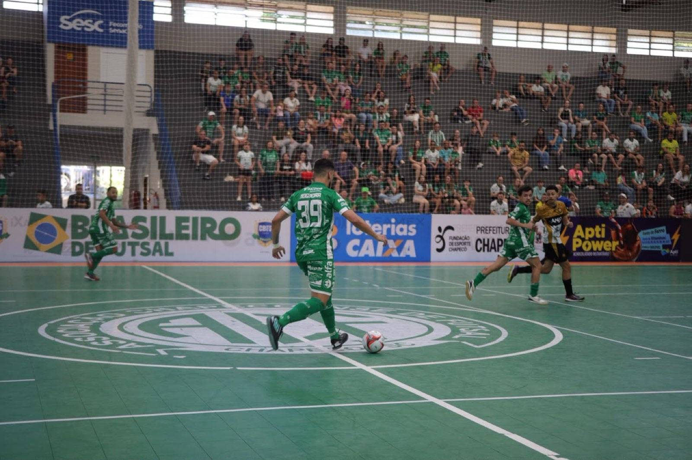

A Prefeitura de Chapecoense/Chapecoense/Unochapecó disputa pelo segundo ano o Campeonato Brasileiro de Futsal e, a exemplo da primeira vez que participou, chega à semifinal. Na tarde deste sábado (31), o Verdão das Quadras venceu o Criciúma por 1 a 0 no ginásio do SESC, em Chapecó, pelo jogo da volta das quartas de final, e garantiu a vaga. O duelo marcou a reestreia de Agnaldo Pereira no comando técnico da equipe adulta.
Agnaldo Pereira foi o primeiro treinador da história da Chape Futsal. Ele ficou quatro temporadas à frente do time, de 2009 a 2012. Nesse último ano, levou o clube verde-branco ao inédito título da Copa Santa Catarina, a única conquista da agremiação em disputa válida pela Federação Catarinense. O profissional assumiu o grupo nesta semana com o aval do prefeito de Chapecó, Valmor Júnior Scolari, já que ele também é secretario municipal de Esportes e Juventude.

A Chapecoense estava a um empate da classificação, pois havia vencido o duelo de ida, em Criciúma, por 2 a 1, no sábado passado (24), mas buscou a vitória e saiu vencedora com gol de Douglinhas, aos 16’20” da segunda etapa. Com o resultado do segundo confronto, o Verdão das Quadras avançou à semifinal ganhando por 3 a 1 no placar agregado. Agora, aguarda o vencedor de Atlético-PI e Sorriso-MT para saber quem será o adversário.
Fotos: @rogersilva_fotografia/@achapefutsal